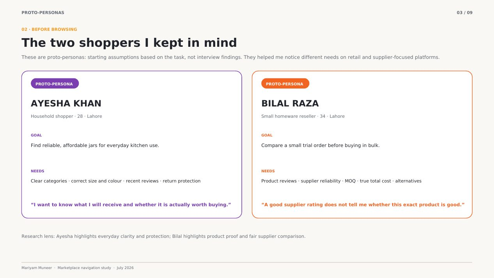
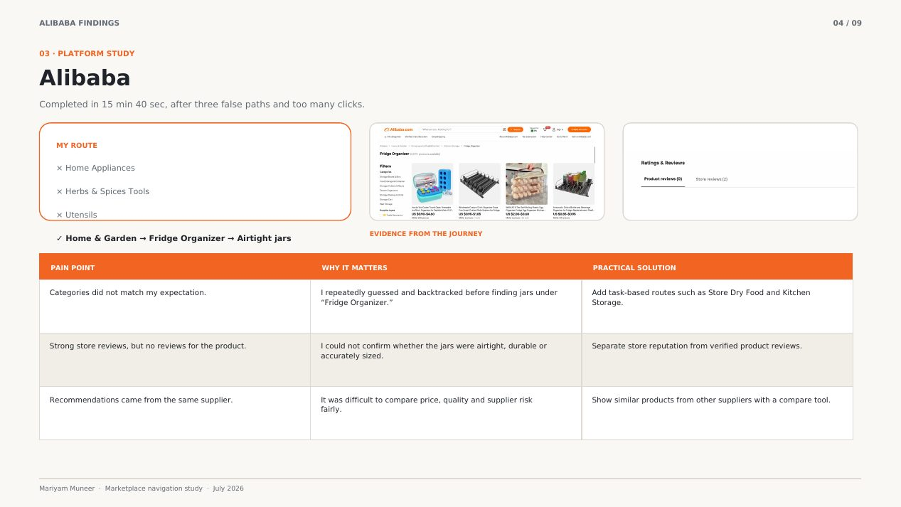
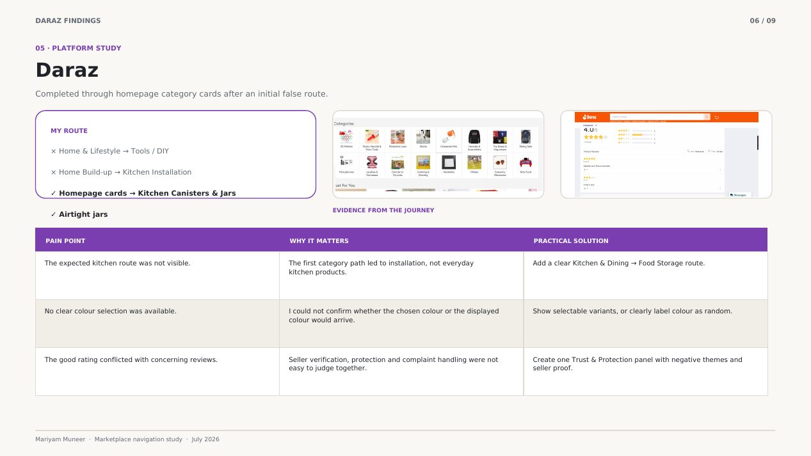

Selected work / Case study
What happens when you can’t use the search bar?
One task, one rule: find airtight jars on Alibaba, Amazon and Daraz using only navigation. The study showed where marketplaces make people work for a simple purchase, and led to a decision-support concept.
- Role
- Solo researcher and designer
- Timeline
- July 2026, as a series of internship tasks
- Method
- Navigation walkthroughs on 3 platforms, review reading, 2 proto-personas, pain-point analysis, concept design
- Tools
- Figma, ChatGPT; concept screens generated with AI and refined by me
The task
Find containers for storing rice, lentils and spices without the search bar, read the product reviews, and record each route, the friction, the evidence and whether I would feel safe buying.
Proto-personas
Before browsing I wrote two proto-personas: Ayesha, a household shopper who wants clear categories and return protection, and Bilal, a small reseller who wants product proof and fair supplier comparison. They are starting assumptions, not interview findings.

What I found
- Alibaba: 15 minutes 40 seconds and three false paths. The jars sat under “Fridge Organizer”, with no product reviews despite strong store reviews.
- Amazon: a wrong route, a sign-in interruption and regional availability issues. Sponsored items looked like normal results.
- Daraz: the kitchen route was hard to spot, colour could not be selected, and a good rating conflicted with concerning reviews.



Three priorities
- Navigation that speaks like users: shortcuts such as Store Dry Food.
- One place for trust: reviews, negative themes, seller proof, returns and protection together.
- Comparison across sellers, not just similar-looking listings.

The concept: Velora
Velora answers those priorities with guided search suggestions, a side-by-side Smart Compare that shows price, rating, delivery, returns and seller, and a shortlist you can revisit. The screens were generated with AI tools from my findings, then refined by me.
Limits
- One task and one researcher, with no interviews and no testing of the concept.
- The personas are assumptions.
- The concept is a design response, not a validated solution.